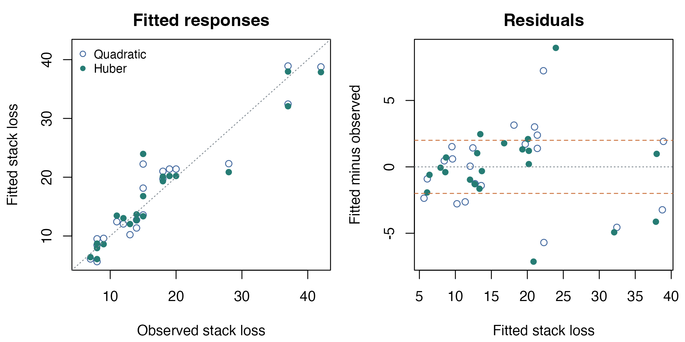
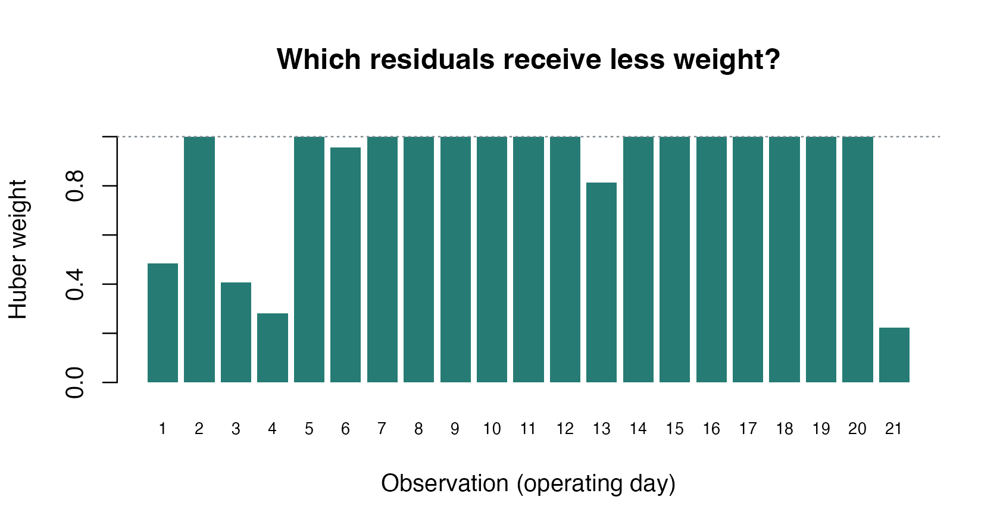

Robust regression on industrial measurements
Source:vignettes/articles/example-stackloss-regression.Rmd
example-stackloss-regression.RmdA few large residuals can strongly affect least-squares regression. A Huber loss changes how the solver weighs those residuals while keeping the same linear prediction function. Here we fit both choices to industrial measurements and verify their answers independently.
Start with the short
robust-line example if residual-based problems are new to you. The
least-squares
guide and riem.problem.leastsquares()
describe the interface used below.
Data and predictor scaling
R’s stackloss data record 21 operating days at a nitric-acid plant. The response measures ammonia that escapes unabsorbed, in ten times percentage units. We use cooling-air flow, water temperature, and acid concentration as predictors. The historical acid column uses a coded scale; consult the linked help for its interpretation. See data sources and reproducibility for provenance.
observations <- datasets::stackloss
stopifnot(!anyNA(observations))
scaled_predictors <- scale(as.matrix(observations[, 1:3]))
design <- cbind(intercept = 1, scaled_predictors)
y <- observations$stack.loss
registered <- list(
X = torch_tensor(design, dtype = torch_float64(), device = "cpu"),
y = torch_tensor(y, dtype = torch_float64(), device = "cpu")
)
data.frame(observations = nrow(design), predictors = ncol(design) - 1)
#> observations predictors
#> 1 21 3We subtract each predictor’s mean and divide by its sample standard deviation. This improves numerical scaling but does not transform the response. An intercept and three slopes form a point in four-dimensional Euclidean space.
Objective: the same residual, two losses
For residual , ordinary least squares minimizes . Huber regression minimizes with
We choose response units, corresponding to 0.2 percentage points in unabsorbed ammonia. This is an explicit illustrative modeling choice, not an estimated noise scale. Changing it changes the fitted model.
threshold <- 2
geometry <- manifold.euclidean(4)
make_problem <- function(loss) {
riem.problem.leastsquares(
geometry,
residual = function(beta, data) data$X$matmul(beta) - data$y,
data = registered, loss = loss, loss_scale = threshold
)
}The tensor data are registered so they move with the problem when the solver selects a different device. Levenberg–Marquardt uses a positive-semidefinite Gauss–Newton model; for Huber loss this includes residual weights and is not the exact robust Hessian.
Solve and report the two fits
losses <- c("linear", "huber")
fits <- setNames(lapply(losses, function(loss) {
riem.optimize(
make_problem(loss),
torch_zeros(4, dtype = torch_float64(), device = "cpu"),
method = "levenberg_marquardt",
control = list(max_iterations = 150, gradient_tolerance = 1e-7),
device = "cpu", dtype = "float64"
)
}), losses)
estimates <- t(vapply(fits, function(fit) as.numeric(fit$point), numeric(4)))
colnames(estimates) <- colnames(design)
round(estimates, 4)
#> intercept Air.Flow Water.Temp Acid.Conc.
#> linear 17.5238 6.5612 4.0941 -0.8152
#> huber 17.3961 7.5921 2.4422 -0.5864
data.frame(
loss = losses,
objective = vapply(fits, function(fit) fit$objective, numeric(1)),
gradient_norm = vapply(fits, function(fit) fit$gradient_norm, numeric(1)),
termination = vapply(fits, function(fit) fit$termination, character(1))
)
#> loss objective gradient_norm termination
#> linear linear 89.41498 3.741475e-09 converged_gradient
#> huber huber 56.72190 6.021835e-08 converged_gradientSlopes above are per one sample standard deviation of a predictor;
the intercept is at the mean predictor values. A
converged_gradient result establishes the requested
first-order tolerance. If a run instead reaches
max_iterations, inspect its gradient before accepting it as
converged. Raw objective values from the two different losses are not
comparable measures of model quality.

Both fits use the same predictors. Huber loss limits the influence of observations with large residuals.
For Huber loss, the Gauss–Newton weight is , with weight one at a zero residual. Downweighting does not delete a row or demonstrate that the observation is erroneous.
weights <- pmin(1, threshold / pmax(abs(residuals[, "huber"]),
.Machine$double.eps))
barplot(weights, names.arg = seq_along(weights), col = "#267C74",
border = NA, ylim = c(0, 1.08), xlab = "Observation (operating day)",
ylab = "Huber weight", main = "Which residuals receive less weight?",
cex.names = 0.7)
abline(h = 1, lty = 3, col = "#7F8991")
Weights are determined by the fitted residuals and the chosen threshold of two response units.
Independent verification
lm() solves the quadratic problem independently. For
Huber loss, we implement the objective and its gradient using base R and
run optim() from the same zero coefficients. Clipping
residuals at the threshold gives the Huber score
,
so the coefficient gradient is
.
quadratic_reference <- coef(lm(y ~ scaled_predictors))
huber_objective <- function(beta) {
r <- drop(design %*% beta) - y
sum(ifelse(abs(r) <= threshold, r^2 / 2,
threshold * (abs(r) - threshold / 2)))
}
huber_gradient <- function(beta) {
r <- drop(design %*% beta) - y
drop(crossprod(design, pmax(-threshold, pmin(threshold, r))))
}
huber_reference <- optim(
rep(0, 4), huber_objective, gr = huber_gradient, method = "BFGS",
control = list(reltol = 1e-14, maxit = 1000)
)
coefficient_error <- c(
linear = max(abs(estimates["linear", ] - quadratic_reference)),
huber = max(abs(estimates["huber", ] - huber_reference$par))
)
independent_huber_gradient <- sqrt(sum(huber_gradient(estimates["huber", ])^2))
data.frame(loss = losses, maximum_coefficient_error = coefficient_error)
#> loss maximum_coefficient_error
#> linear linear 5.989316e-10
#> huber huber 1.730010e-08
independent_huber_gradient
#> [1] 6.021834e-08
stopifnot(
huber_reference$convergence == 0,
all(coefficient_error < 1e-5),
independent_huber_gradient < 1e-6,
abs(huber_objective(estimates["huber", ]) - fits$huber$objective) < 1e-9,
all(weights > 0 & weights <= 1),
all(vapply(fits, function(fit) fit$gradient_norm < 1e-6, logical(1)))
)The coefficient tolerance is 1e-5 because the
independent solvers use different stopping rules. A second seeded
execution should reproduce the reported coefficients and residual checks
to absolute tolerance 1e-10 on the same CPU/runtime.
Interpretation and device options
This example illustrates an optimization choice. It does not establish which loss predicts future plant behavior best; that would require a defensible validation design and subject-matter assessment. Huber loss limits response residual influence but does not by itself solve all leverage or model misspecification problems.
The website runs on CPU float64. You can retain that override on a workstation with GPUs, allow automatic selection, or explicitly request a compatible GPU:
initial <- torch_zeros(4, dtype = torch_float64(), device = "cpu")
riem.optimize(make_problem("huber"), initial, "levenberg_marquardt",
device = "auto", dtype = "float64")
riem.optimize(make_problem("huber"), initial, "levenberg_marquardt",
device = "cpu", dtype = "float64")
riem.optimize(make_problem("huber"), initial, "levenberg_marquardt",
device = "cuda:0", dtype = "float64")